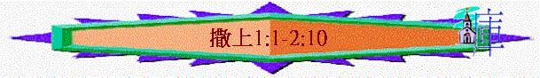

|
成 敗 與 興 衰 |
||
|
事
奉 |
民
族 |
君
王 |
|
撒上1-3 |
撒上4-7 |
撒上8-撒下24 |
甲.事奉的成敗(撒上1-3)
〜當時以色列人仍沒有王管治，而他們的領袖就是宗教上的人物，1-3章題及祭司、先知與士師，他們都是事奉神的人，重點有以利一家及撒母耳，但他們也有不同的命運，有人被神所用，有人卻被神所棄，原因何在？
一.人的呼求與神的興起(1:1-2:10)
〜此段描述哈拿的呼求與撒母耳的出世(一位被神所用的人興起之預備)
A.敬虔的背景
a.利未的後裔
「以法蓮山地的拉瑪瑣非有一個以法蓮人，名叫以利加拿，是蘇弗的玄孫，託戶的曾孫，以利戶的孫子，耶羅罕的兒子。」1:1
「供職的人和他們的子孫記在下面：哥轄的子孫中有歌唱的希幔。希幔是約珥的兒子；約珥是撒母耳的兒子；」代上6:33
「可拉是以斯哈的兒子；以斯哈是哥轄的兒子；哥轄是利未的兒子；利未是以色列的兒子。」代上6:38
〜以利加拿原是利未支派哥轄的後裔，當時他們沒有地土，要散居在以列人中，以利加拿應住在以法蓮，所以他們也稱為以法蓮人，但真正仍屬利未支派譜系，撒母耳要成為祭司，首先他的父親一定要是利未支派
b.敬虔的生活
(1)分別為聖
「他有兩個妻：一名哈拿，一名毗尼拿。毗尼拿有兒女，哈拿沒有兒女。」1:2
「哈拿回答說：「主啊，不是這樣。我是心裡愁苦的婦人，清酒濃酒都沒有喝，但在耶和華面前傾心吐意。」1:15
〜按當時的律法是容許人有多妻(但神原意是一夫一妻的)
〜而哈拿是撒母耳的母親，她平時分別出來，不沾清酒濃酒，有敬虔的母親也可以有敬虔的後裔
(2)常守禮法
「這人每年從本城上到示羅，敬拜祭祀萬軍之耶和華；在那裡有以利的兩個兒子何弗尼、非尼哈當耶和華的祭司。」1:3
B.母親的呼求
a.她的痛苦----受氣與沒兒
「毗尼拿見耶和華不使哈拿生育，就作他的對頭，大大激動他，要使他生氣。每年上到耶和華殿的時候，以利加拿都以雙分給哈拿；毗尼拿仍是激動他，以致他哭泣不吃飯。」1:6-7
〜在希伯來人的觀念，沒有生育是女人最大的恥辱
〜兒女是神所賜人的產業，神有權使人不生育的
b.她的呼求
「哈拿心裡愁苦，就痛痛哭泣，祈禱耶和華，許願說：「萬軍之耶和華啊，你若垂顧婢女的苦情，眷念不忘婢女，賜我一個兒子，我必使他終身歸與耶和華，不用剃頭刀剃他的頭。」」1:10-11
「哈拿回答說：「主啊，不是這樣。我是心裡愁苦的婦人，清酒濃酒都沒有喝，但在耶和華面前傾心吐意。不要將婢女看作不正經的女子。我因被人激動，愁苦太多，所以祈求到如今。」以利說：「你可以平平安安的回去。願以色列的神允准你向他所求的！」哈拿說：「願婢女在你眼前蒙恩。」於是婦人走去吃飯，面上再不帶愁容了。」1:15-18
(1)來到神前
〜她是向耶和華祈禱，不單是來到丈夫面前哭訢
(2)傾心吐意
〜舒發感受----痛痛哭泣
〜坦然請求----求得兒子
(3)不住祈禱
(4)信心交託
〜當祭司對她說，神已垂聽她祈禱，她就不再帶愁容，有信心繼續走前面的道路
C.真神的賜予
「次日清早，他們起來，在耶和華面前敬拜，就回拉瑪。到了家裡，以利加拿和妻哈拿同房，耶和華顧念哈拿，哈拿就懷孕。日期滿足，生了一個兒子，給他起名叫撒母耳，說：「這是我從耶和華那裡求來的。」」1:19-20
〜神垂聽了哈拿的祈求，給她一個兒子，而撒母耳將來可以事奉神的起點----是因為母親的祈求及神的賜予，他沒甚麼可誇，因為他可以不生於世上，也沒機會事奉神。
D.家庭的擺上
「許願說：「萬軍之耶和華啊，你若垂顧婢女的苦情，眷念不忘婢女，賜我一個兒子，我必使他終身歸與耶和華，不用剃頭刀剃他的頭。」」1:11
「以利加拿和他全家都上示羅去，要向耶和華獻年祭，並還所許的願。哈拿卻沒有上去，對丈夫說：「等孩子斷了奶，我便帶他上去朝見耶和華，使他永遠住在那裡。」他丈夫以利加拿說：「就隨你的意行吧！可以等兒子斷了奶。但願耶和華應驗他的話。」於是婦人在家裡乳養兒子，直到斷了奶；」1:21-23
「我祈求為要得這孩子；耶和華已將我所求的賜給我了。所以，我將這孩子歸與耶和華，使他終身歸與耶和華。」於是在那裡敬拜耶和華。」1:27-28
〜「等孩子斷了奶」，約二至三歲，哈拿還願，他們一家願將自己的子獻給神，若撒母耳不剃頭，他應是作拿細耳人，從小事奉神了。
〜人若將自己的兒子獻上，神是知道的。
E.讚美的回應
〜哈拿對神讚美的回應內容不單純是個人的讚美，也突顯撒母耳記的內容及主題，神使人高昇，也可使人卑微，祂才是至高掌權者，有權立王，也有權作審判，人的得失起跌在乎至高的神
a.感謝神----使她歡喜
「哈拿禱告說：我的心因耶和華快樂；我的角因耶和華高舉。我的口向仇敵張開；我因耶和華的救恩歡欣。」2:1
b.讚美神----沒有可比
「只有耶和華為聖；除他以外沒有可比的，也沒有磐石像我們的神。」2:2
(1)人不可自誇
「人不要誇口說驕傲的話，也不要出狂妄的言語；因耶和華是大有智識的神，人的行為被他衡量。勇士的弓都已折斷；跌倒的人以力量束腰。素來飽足的，反作用人求食；飢餓的，再不飢餓。不生育的，生了七個兒子；多有兒女的，反倒衰微。」2:3-5
(2)神才是掌權
(A)生命的掌權者
「耶和華使人死，也使人活，使人下陰間，也使人往上升。」2:6
(B)地位的掌權者
「他使人貧窮，也使人富足，使人卑微，也使人高貴。他從灰塵裡抬舉貧寒人，從糞堆中提拔窮乏人，使他們與王子同坐，得著榮耀的座位。地的柱子屬於耶和華；他將世界立在其上。」2:7-8
(C)能力的掌權者
「他必保護聖民的腳步，使惡人在黑暗中寂然不動；人都不能靠力量得勝。與耶和華爭競的，必被打碎；耶和華必從天上以雷攻擊他，必審判地極的人，將力量賜與所立的王，高舉受膏者的角。」2:9-10